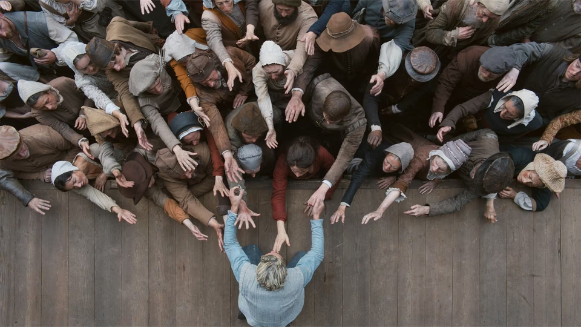

February 3, 2026

A few weeks ago I skimmed a review labeling this movie as a "capital 'W' weepie" and admittedly that turned me off from the prospect of watching it, but I'm glad I ended up catching a showing on the big screen. To be fair to the original review, the film did seem to make an extremely concerted effort to get the audience sniffling; though the third act is so powerful that you don't end up minding the emotional engineering all that much. I don't know shit about boxing but stay with me here - this film feels like its a fighter who takes a lot of shots where most of em miss, but you might just get hit with one or two that knock you out cold. Now, do I think the film tries to tackle too much through its story and doesn't give nearly enough time to the silence, and as a result, the audience tunes out the noise, yes — but when the finale knocks you out, you stop counting the missed punches.
This movie might not have a whole lot to say, but the final message it leaves us with is quite powerful: Grief is complex, and it strikes each person in a fairly unique way. No one is really able to "deal with it", though the consequent suffering hits some people a lot harder. Some internalize their pain while others can't help but express it externally. Agnes is shellshocked by her child's passing, and William's seeming numbness starts fracturing their bond. Narratively this second act is built for the audience to follow Agnes's psyche, so we also start feeling the same growing confusion and even resentment towards him. This mindset that Chloe Zhao puts us in sets up the final sequence masterfully. We walk into the playroom with Agnes, confused and not sure of what to anticipate. There is a weird combination of guilt and relief we see Agnes feel when experiencing the power of the play and realizing that William's work is how he expresses his grief and possibly the only way he was able to deal with it. It's far from the truth that he wasn't grieving, rather Agnes's pain was so strong that it blinded her from seeing the suffering of others.
This film almost felt like a love letter to cinema. Movies can mean so much to all of us, there are films that I watched years ago but still linger in my mind to this day. The third act of Hamnet shows the powerful effect a narrative work can have on the artist themselves, and the audience, regardless of their personal connection to the story or lack thereof. It also acts as a peek into the mind of the suffering artist, and how they channel their pain to create something so powerful. Now I am far from an artist, let alone a tortured one, but I have definitely been personally impacted by the stories that others are able to express through the medium of cinema. Work like this slowly gives more and more credence to the argument that suffering is somehow the core of all joy in the world and that you need cold to appreciate the warmth.
Also two small notes I wanted to touch on, first, this film was the strongest pro-natalist propaganda piece I have seen in years (right until the second act hits), and second, part of the reason this movie even worked for me given how out of my palate it is was the choice to play On The Nature Of Daylight at the end. Arrival is one of my favorite films and it helped kickstart my love for cinema back in middle school in large part due to this song. I can't explain how shocked and absolutely thrilled I was when I recognized the first few notes realizing that I will now get to experience this song on cinema speakers for the first time. I can write so much about how much this song means to me, the proof being the final essay I wrote for my college music class on this track, but all I will say is please do yourself a favor and watch this movie in the theater even if you don't care for the film at all, but just to give yourself a chance to listen to this track in the theater.